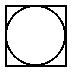
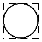
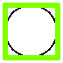
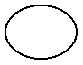
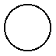
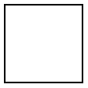
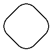
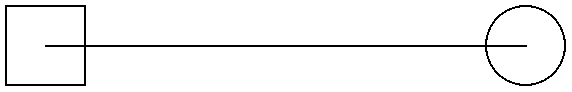
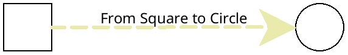
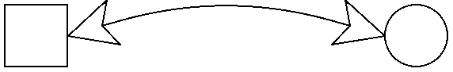

2 Basic Pict Constructors
The w, h, a, and d arguments determine the width, height, ascent, and descent of the of the resulting pict’s bounding box respectively.
When the rendering procedure is called, the current pen and brush will be 'solid and in the pict’s color and linewidth, and the scale and offset of the drawing context will be set. The text mode will be transparent, but the font and text colors are not guaranteed to be anything in particular.
> (dc (λ (dc dx dy) (define old-brush (send dc get-brush)) (define old-pen (send dc get-pen)) (send dc set-brush (new brush% [style 'fdiagonal-hatch] [color "darkslategray"])) (send dc set-pen (new pen% [width 3] [color "slategray"])) (define path (new dc-path%)) (send path move-to 0 0) (send path line-to 50 0) (send path line-to 25 50) (send path close) (send dc draw-path path dx dy) (send dc set-brush old-brush) (send dc set-pen old-pen)) 50 50)
The draw is called during the dynamic extent of the call to dc as part of the contract checking.
Specifically, the pre-condition portion of the contract for dc concocts a dc<%> object with a random initial state, calls the draw argument with that dc<%> and then checks to make sure that draw the state of the dc<%> object is the same as it was before draw was called.
> (dc (λ (dc dx dy) (send dc set-brush "red" 'solid) (send dc set-pen "black" 1 'transparent) (send dc draw-ellipse dx dy 50 50)) 50 50) dc: contract violation;
draw proc does not restore the dc state after being called
draw: #<procedure>
in: (->i
((draw
(-> (is-a?/c dc<%>) real? real? any))
(w real?)
(h real?))
((d (or/c #f real?)) (a (or/c #f real?)))
#:pre/name
(draw)
"draw proc does not restore the dc state after being
called"
(... draw)
(p pict?))
contract from: <pkgs>/pict-lib/pict/main.rkt
blaming: top-level
(assuming the contract is correct)
at: <pkgs>/pict-lib/pict/main.rkt:73.3
修改于package pict-lib的1.3版本：The draw argument is now called by the #:pre condition of dc.
函数
size : real? = 0 (blank w h) → pict? w : real? h : real? (blank w a d) → pict? w : real? a : real? d : real? (blank w h a d) → pict? w : real? h : real? a : real? d : real?
> (blank 50)
函数
content : string? style : text-style/c = null size : (integer-in 1 1024) = 12 angle : real? = 0
The style argument must be one of the following:
null —
the default, same as 'default a font% object
a font family symbol, such a 'roman (see font%)
a font face string, such as "Helvetica" (see font%)
(cons str sym) combining a face string and a font family (in case the face is unavailable; see font%)
(cons 'bold style) for a valid style
(cons 'italic style)
(cons 'subscript style)
(cons 'superscript style)
(cons 'large-script style) —
makes subscripts and superscripts larger, which is more suitable for small text sizes as might appear in print 添加于package pict-lib的1.5版本。
(cons 'caps style)
(cons 'combine style) —
allows kerning and ligatures (the default, unless the 'modern family is specified) (cons 'no-combine style) —
renders characters individually (cons 'aligned style) —
enables hinting, which rounds metrics to integers (cons 'unaligned style) —
disables hinting (which is the default), so that metrics are scalable (cons color style) —
where color is a color% object, colorizes the text
If both 'combine and 'no-combine are specified, the first one in style takes precedence. Similarly, if both 'aligned and 'unaligned are specified, the first one in style takes precedence. If 'caps is specified, the angle must be zero.
The given size is in pixels, but it is ignored if a font% object is provided in the text-style.
The angle is in radians, and positive values rotate counter-clockwise. For a non-zero angle, the resulting pict’s bounding box covers the rotated text, and the descent is zero and the ascent is the height.
函数
w : real? h : real? seg-length : (or/c #f real?) = #f (vline w h [#:segment seg-length]) → pict? w : real? h : real? seg-length : (or/c #f real?) = #f
函数
(frame pict [ #:segment seg-length #:color color #:line-width width]) → pict? pict : pict-convertible? seg-length : (or/c #f real?) = #f color : (or/c #f string? (is-a?/c color<%>)) = #f width : (or/c #f real?) = #f
> (frame (circle 30)) 
> (frame (circle 30) #:segment 5) 
> (frame (circle 30) #:color "chartreuse" #:line-width 3) 
函数
(ellipse w h [ #:border-color border-color #:border-width border-width]) → pict? w : real? h : real? border-color : (or/c #f string? (is-a?/c color<%>)) = #f border-width : (or/c #f real?) = #f
(circle diameter [ #:border-color border-color #:border-width border-width]) → pict? diameter : real? border-color : (or/c #f string? (is-a?/c color<%>)) = #f border-width : (or/c #f real?) = #f
(filled-ellipse w h [ #:draw-border? draw-border? #:color color #:border-color border-color #:border-width border-width]) → pict? w : real? h : real? draw-border? : any/c = #t color : (or/c #f string? (is-a?/c color<%>)) = #f border-color : (or/c #f string? (is-a?/c color<%>)) = #f border-width : (or/c #f real?) = #f
(disk diameter [ #:draw-border? draw-border? #:color color #:border-color border-color #:border-width border-width]) → pict? diameter : (and/c rational? (not/c negative?)) draw-border? : any/c = #t color : (or/c #f string? (is-a?/c color<%>)) = #f border-color : (or/c #f string? (is-a?/c color<%>)) = #f border-width : (or/c #f real?) = #f
If draw-border? is #f, then the pen is set to be transparent before drawing the ellipse. The color, border-color and border-width arguments control the fill color, color of the border, and width of the border, respectively. If these arguments are #f, values set using linewidth and colorize are used instead. Passing non-#f values as border-color or border-width when draw-border? is #f results in a contract violation.
> (ellipse 40 30) 
> (circle 30) 
> (filled-ellipse 30 40) > (disk 30) > (disk 40 #:color "Chartreuse" #:border-color "Medium Aquamarine" #:border-width 5)
修改于package pict-lib的1.4版本：Added #:color, #:border-color and #:border-width arguments.
函数
(rectangle w h [ #:border-color border-color #:border-width border-width]) → pict? w : real? h : real? border-color : (or/c #f string? (is-a?/c color<%>)) = #f border-width : (or/c #f real?) = #f
(filled-rectangle w h [ #:draw-border? draw-border? #:color color #:border-color border-color #:border-width border-width]) → pict? w : real? h : real? draw-border? : any/c = #t color : (or/c #f string? (is-a?/c color<%>)) = #f border-color : (or/c #f string? (is-a?/c color<%>)) = #f border-width : (or/c #f real?) = #f
If draw-border? is #f, then the pen is set to be transparent before drawing the rectangle. The color, border-color and border-width arguments control the fill color, color of the border, and width of the border, respectively. If these arguments are #f, values set using linewidth and colorize are used instead. Passing non-#f values as border-color or border-width when draw-border? is #f results in a contract violation.
> (rectangle 50 50) 
> (filled-rectangle 50 80) > (filled-rectangle 60 70 #:color "Thistle" #:border-color "Gainsboro" #:border-width 10)

修改于package pict-lib的1.4版本：Added #:color, #:border-color and #:border-width arguments.
函数
(rounded-rectangle w h [ corner-radius #:angle angle #:border-color border-color #:border-width border-width]) → pict? w : real? h : real? corner-radius : real? = -0.25 angle : real? = 0 border-color : (or/c #f string? (is-a?/c color<%>)) = #f border-width : (or/c #f real?) = #f
(filled-rounded-rectangle w h [ corner-radius #:angle angle #:draw-border? draw-border? #:color color #:border-color border-color #:border-width border-width]) → pict? w : real? h : real? corner-radius : real? = -0.25 angle : real? = 0 draw-border? : any/c = #t color : (or/c #f string? (is-a?/c color<%>)) = #f border-color : (or/c #f string? (is-a?/c color<%>)) = #f border-width : (or/c #f real?) = #f
The angle determines how much the rectangle is rotated, in radians.
If draw-border? is #f, then the pen is set to be transparent before drawing the rectangle. The color, border-color and border-width arguments control the fill color, color of the border, and width of the border, respectively. If these arguments are #f, values set using linewidth and colorize are used instead. Passing non-#f values as border-color or border-width when draw-border? is #f results in a contract violation.
> (rounded-rectangle 40 40 -0.3 #:angle (/ pi 4)) 
> (filled-rounded-rectangle 50 40) > (filled-rounded-rectangle 70 30 #:color "Burlywood" #:border-color "Bisque" #:border-width 8)

修改于package pict-lib的1.4版本：Added #:color, #:border-color and #:border-width arguments.
函数
img :
(or/c path-string? (is-a?/c bitmap%) (is-a?/c image-snip%))
If the bitmap cannot be loaded, if the given bitmap% object is not valid, or if the bitmap-draft-mode parameter is set to #t, the result pict draws the word “bitmap failed”.
函数
dx : real? dy : real? size : real? (pip-arrow-line dx dy size) → pict? dx : real? dy : real? size : real? (pip-arrows-line dx dy size) → pict? dx : real? dy : real? size : real?
The size is used for the arrowhead size. Even though pip-line creates no arrowheads, it accepts the size argument for consistency with the other functions.
函数
(pin-line pict src find-src dest find-dest [ #:start-angle start-angle #:end-angle end-angle #:start-pull start-pull #:end-pull end-pull #:line-width line-width #:color color #:alpha alpha #:style style #:under? under? #:label label #:x-adjust-label x-adjust-label #:y-adjust-label y-adjust-label]) → pict? pict : pict-convertible? src : pict-path? find-src : (pict-convertible? pict-path? . -> . (values real? real?)) dest : pict-path? find-dest : (pict-convertible? pict-path? . -> . (values real? real?)) start-angle : (or/c real? #f) = #f end-angle : (or/c real? #f) = #f start-pull : real? = 1/4 end-pull : real? = 1/4 line-width : (or/c #f real?) = #f color : (or/c #f string? (is-a?/c color%)) = #f alpha : (real-in 0.0 1.0) = #f
style :
(or/c 'transparent 'solid 'xor 'hilite 'dot 'long-dash 'short-dash 'dot-dash 'xor-dot 'xor-long-dash 'xor-short-dash 'xor-dot-dash #f) = #f under? : any/c = #f label : pict? = (blank) x-adjust-label : real? = 0 y-adjust-label : real? = 0
(pin-arrow-line arrow-size pict src find-src dest find-dest [ #:start-angle start-angle #:end-angle end-angle #:start-pull start-pull #:end-pull end-pull #:line-width line-width #:color color #:alpha alpha #:style style #:under? under? #:label label #:x-adjust-label x-adjust-label #:y-adjust-label y-adjust-label #:solid? solid? #:hide-arrowhead? hide-arrowhead?]) → pict? arrow-size : real? pict : pict-convertible? src : pict-path? find-src : (pict-convertible? pict-path? . -> . (values real? real?)) dest : pict-path? find-dest : (pict-convertible? pict-path? . -> . (values real? real?)) start-angle : (or/c real? #f) = #f end-angle : (or/c real? #f) = #f start-pull : real? = 1/4 end-pull : real? = 1/4 line-width : (or/c #f real?) = #f color : (or/c #f string? (is-a?/c color%)) = #f alpha : (real-in 0.0 1.0) = #f
style :
(or/c 'transparent 'solid 'xor 'hilite 'dot 'long-dash 'short-dash 'dot-dash 'xor-dot 'xor-long-dash 'xor-short-dash 'xor-dot-dash #f) = #f under? : any/c = #f label : pict? = (blank) x-adjust-label : real? = 0 y-adjust-label : real? = 0 solid? : any/c = #t hide-arrowhead? : any/c = #f
(pin-arrows-line arrow-size pict src find-src dest find-dest [ #:start-angle start-angle #:end-angle end-angle #:start-pull start-pull #:end-pull end-pull #:line-width line-width #:color color #:alpha alpha #:style style #:under? under? #:label label #:x-adjust-label x-adjust-label #:y-adjust-label y-adjust-label #:solid? solid? #:hide-arrowhead? hide-arrowhead?]) → pict? arrow-size : real? pict : pict-convertible? src : pict-path? find-src : (pict-convertible? pict-path? . -> . (values real? real?)) dest : pict-path? find-dest : (pict-convertible? pict-path? . -> . (values real? real?)) start-angle : (or/c real? #f) = #f end-angle : (or/c real? #f) = #f start-pull : real? = 1/4 end-pull : real? = 1/4 line-width : (or/c #f real?) = #f color : (or/c #f string? (is-a?/c color%)) = #f alpha : (real-in 0.0 1.0) = #f
style :
(or/c 'transparent 'solid 'xor 'hilite 'dot 'long-dash 'short-dash 'dot-dash 'xor-dot 'xor-long-dash 'xor-short-dash 'xor-dot-dash #f) = #f under? : any/c = #f label : pict-convertible? = (blank) x-adjust-label : real? = 0 y-adjust-label : real? = 0 solid? : any/c = #t hide-arrowhead? : any/c = #f
If under? is true, then the line and arrows are added under the existing pict drawing, instead of on top. If solid? is false, then the arrowheads are hollow instead of filled.
The start-angle, end-angle, start-pull, and end-pull arguments control the curve of the line (and the defaults produce a straight line):
The start-angle and end-angle arguments specify the direction of curve at its start and end positions; if either is #f, it defaults to the angle of a straight line from the start position to end position.
The start-pull and end-pull arguments specify a kind of momentum for the starting and ending angles; larger values preserve the angle longer.
The line-width, color, alpha, and style arguments apply to the added line.
When the hide-arrowhead? argument is a true value, then space for an arrowhead is kept around the line, but the arrowhead itself is not drawn.
When the label argument is non-false, the given pict is used as a label for the line, and moved by (x-adjust-label, y-adjust-label).
(define pict-a (rectangle 40 40))
(define pict-b (circle 40))
(define combined (hc-append 200 pict-a pict-b))
> (pin-line combined pict-a cc-find pict-b cc-find) 
> (pin-arrow-line 30 combined pict-a rc-find pict-b lc-find #:line-width 3 #:style 'long-dash #:color "medium goldenrod" #:label (text "From Square to Circle")) 
> (pin-arrows-line 30 combined pict-a rc-find pict-b lc-find #:start-angle (/ pi 11) #:end-angle (- (/ pi 11)) #:solid? #f) 
修改于package pict-lib的1.4版本：Added #:label, #:x-adjust-label and #:y-adjust-label arguments.
parameter
(bitmap-draft-mode on?) → void? on? : any/c